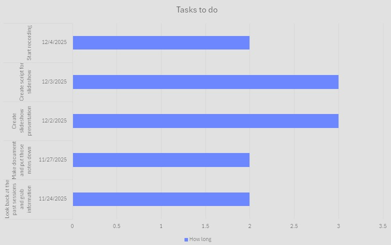

For assignment 14, I was tasked with learning about project management. Project management, in short, is a way to keep projects organized and on track. I personally love learning about this, as I think it is essential for not just projects, but almost everything in life. Knowing something like this in life is such useful knowledge, and I really hope that people use this more often. As for the skills themselves, they will definitely be 100% useful to me in the future.
Below this paragraph is a chart for when I want to start working on the final project. I mainly want to focus on recording a presentation for a short summarization of the WEB110 course. For the presentation itself, I want to go in with an approach that seems reliable and make sure I don't bore the viewer who is watching. I want to give this presentation my all.
